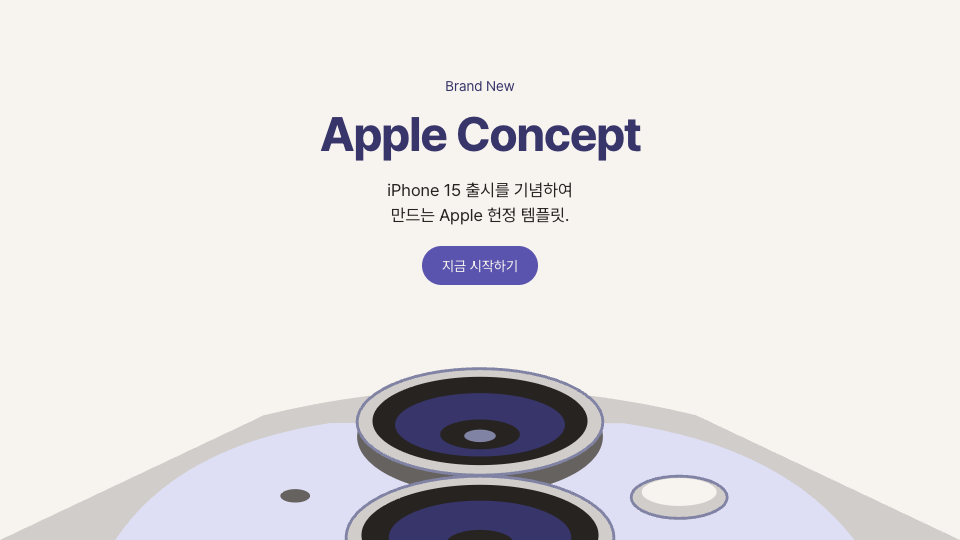
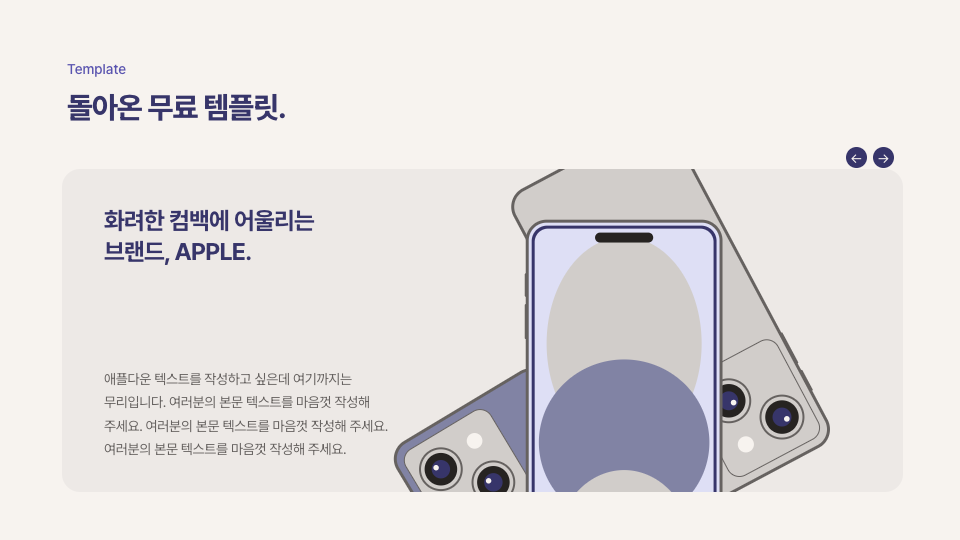
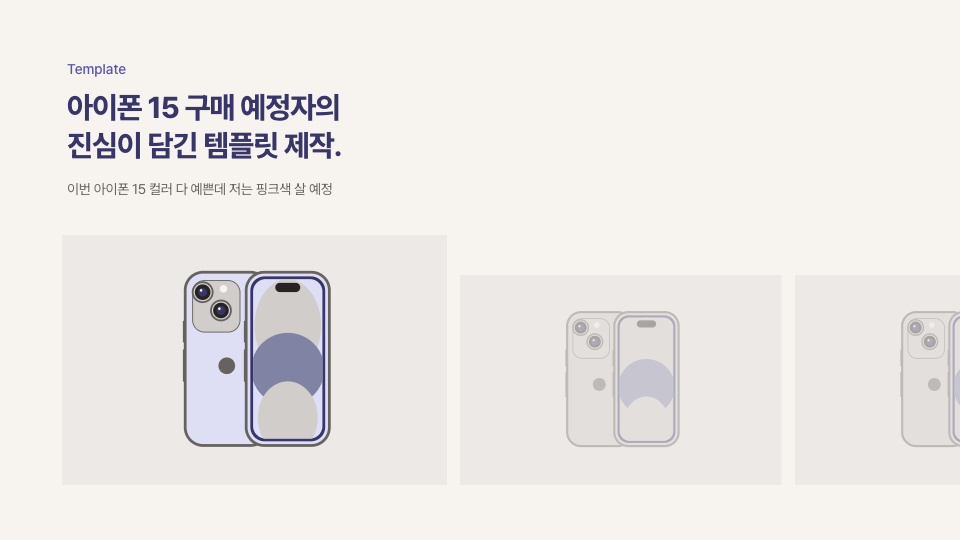
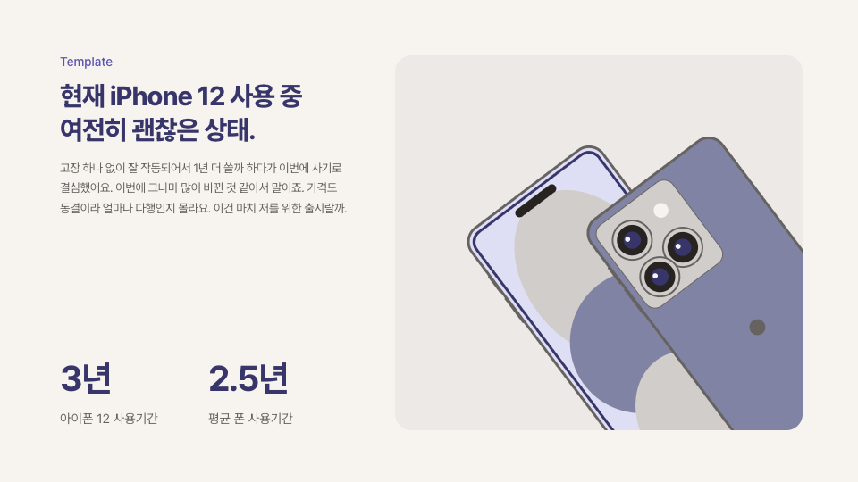
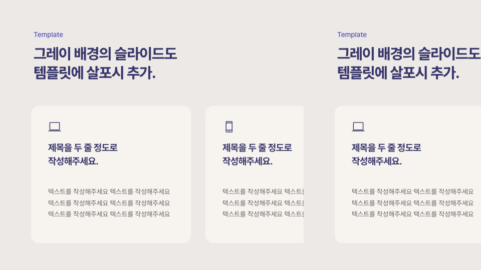
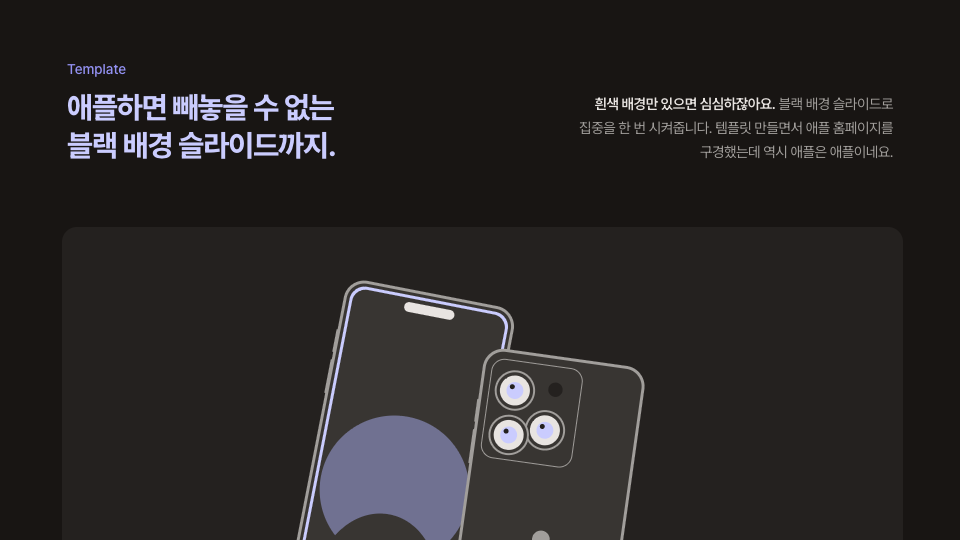
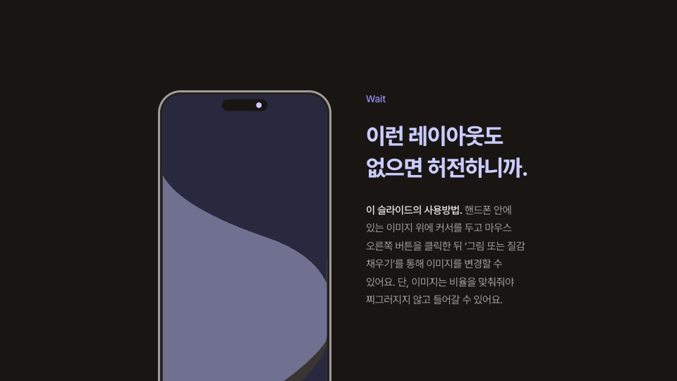

Apple Concept
중앙 정렬 제목·설명·시작 버튼과 하단을 가로지르는 카메라 확대 이미지 · 중앙 정렬 제목·설명·시작 버튼과 하단을 가로지르는 카메라 확대 이미지

돌아온 무료 템플릿.
상단 좌측 제목과 탐색 표시, 아래 넓은 둥근 배너의 좌측 설명·우측 스마트폰 3대 콜라주 · 상단 좌측 제목과 탐색 표시, 아래 넓은 둥근 배너의 좌측 설명·우측 스마트폰 3대 콜라주
· 화면 출처 ↗
아이폰 15 구매 예정자의 진심이 담긴 템플릿 제작.
좌측 두 줄 제목 아래 3개 제품 갤러리; 첫 카드가 크고 뒤의 두 카드는 옅고 마지막 카드가 화면 가장자리에서 잘림 · 좌측 두 줄 제목 아래 3개 제품 갤러리; 첫 카드가 크고 뒤의 두 카드는 옅고 마지막 카드가 화면 가장자리에서 잘림
· 화면 출처 ↗
현재 iPhone 12 사용 중 여전히 괜찮은 상태.
왼쪽에 제목과 설명 및 3년·2.5년 지표, 오른쪽 큰 라운드 패널에 대각선 제품 두 대 · 왼쪽에 제목과 설명 및 3년·2.5년 지표, 오른쪽 큰 라운드 패널에 대각선 제품 두 대
· 화면 출처 ↗
그레이 배경의 슬라이드도 템플릿에 살포시 추가.
밝은 중립 배경 위 제목과 탐색 표시, 노트북·폰·시계 아이콘을 가진 가로 3개 흰 카드 · 밝은 중립 배경 위 제목과 탐색 표시, 노트북·폰·시계 아이콘을 가진 가로 3개 흰 카드
· 화면 출처 ↗
애플하면 빼놓을 수 없는 블랙 배경 슬라이드까지.
다크 배경에 좌측 두 줄 제목과 우측 정렬 설명, 하단의 둥근 제품 패널에서 솟아오르는 폰 2대 · 다크 배경에 좌측 두 줄 제목과 우측 정렬 설명, 하단의 둥근 제품 패널에서 솟아오르는 폰 2대
· 화면 출처 ↗
이런 레이아웃도 없으면 허전하니까.
다크 배경의 왼쪽에 아래로 잘리는 큰 정면 스마트폰, 오른쪽에 Wait 라벨·제목·이미지 교체 안내 · 다크 배경의 왼쪽에 아래로 잘리는 큰 정면 스마트폰, 오른쪽에 Wait 라벨·제목·이미지 교체 안내
· 화면 출처 ↗